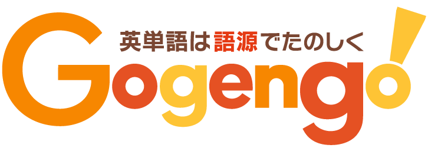
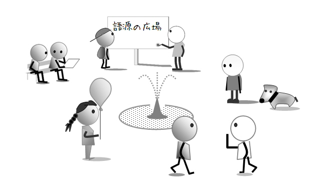

自己紹介
学びを表すことが好き。言葉を学ぶことが好き。言葉の成り立ちを十年にわたり追いかけている。英語を語源で学ぶたのしさを発信する Gogengo! や『語源の広場』を運営。好きな英単語は company と education。そして、ソフトウェア開発やプロセス改善を行う。『アジャイルサムライ』翻訳者。大事にしている思いは、「生きることは学ぶこと。せっかく学ぶなら、たのしく」 。
語源を学ぶたのしさ
Gogengo!

Gogengo! は、「英単語を語源で学べる」ウェブサイトです。どのような内容なのかというと、英単語を分解して学ぶ方法をご紹介しています。たとえば、prepaid は「前払い」を意味する英単語ですが、これは pre と paid に分けることができます。分けた pre や paid は、「語源」と呼びます。それぞれの語源には意味があります。pre には「前もって」という意味があり、paid には「支払った」という意味があります。これら二つの意味を合わせると、「前もって支払った」となります。だから、prepaid は「前払い」を意味するというわけです。このように英単語を学ぶと、理由があるので覚えやすく、雑学としても面白いと思います。「英単語をすぐ忘れてしまう」。「語彙をたのしく増やしたい」。「なぜ言葉に意味があるのか」。そのような思いや疑問をかかえるかたは、特にたのしめると思います。
2009 年 6 月に公開して八年半が経ちました。今では毎月 3 万 5 千人の方々に見ていただけるようになりました。Gogengo! を運営している背景についてはこちらの記事にまとめてみました。
語源の広場

『語源の広場』は、『英語耳』松澤喜好さん、『日本語と英語をつなぐ』すずきひろしさん、角掛拓未の三名で運営しているブログです。お互いのコンテンツを持ち寄り、多角的な視点で語源を解説しています。頻度の高い順で英単語を一覧できるので、語源と合わせてさらに効率よく学べます。
翻訳書

ソフトウェア開発を進めるにあたって「アジャイル」という考えかたがあります。アジャイルは、「こまめに話し合いながら、よりよいものをつくろう」という発想です。そんなアジャイルをわかりやすく解説する『アジャイルサムライ』を翻訳しました。原文のフレンドリーな雰囲気が伝わるように心がけました。著者の Jonathan Rasmusson さんは、アジャイルをはじめて学ぶ人がたくさんの本を読まなくていいように、七冊の関連書を本書にまとめました。ですので、この一冊でアジャイルについて網羅できます。
プロジェクトのチームで読んで話し合うと、仕事の進め方や大事にすることを共有できるのでおすすめです。全国で読書会がひらかれています。おかげさまで 15 刷となり、3 万部を突破しました。
お知らせ
- 2017/04: 『英語耳』松澤喜好さん、『日本語と英語をつなぐ』すずきひろしさん、『Gogengo!』角掛拓未のコラボ企画、『語源の広場』を公開しました - bekkou68 の日記
- 2016/09: 『英語耳』『語源耳』の松澤喜好さんから Gogengo! へ語源データを提供していただけることになりました - bekkou68 の日記
- 2016/05: ウリドキネット、5700万円の資金調達を実施 - 寺倉そめひこ氏がメディアプランナーに、角掛拓未氏が開発アドバイザーに就任 - PR TIMES
おはなし
- 2017/12: 墨田区のイベントにて「語源を学ぶたのしさ」
- 2016/11: MPP で「Gogengo!を学習に取り込もう」
- 2015/06: Scrum Gathering Vietnam 2015 で「社内にアジャイルサムライのノウハウを広める活動」
略歴
- 2017/04: 語源の広場 公開
- 2016/09: 株式会社 LOUPE アドバイザー
- 2016/03: 株式会社ウリドキネット アドバイザー
- 2016/03: 株式会社ビットジャーニー Kibela 開発
- 2014/07: 株式会社イグニス マザーズ上場
- 2011/07: アジャイルサムライ 出版
- 2010/04: 株式会社永和システムマネジメント 入社
- 2010/03: 会津大学コンピュータ理工学部 卒業
- 2009/06: Gogengo! 公開
仕事
語源をお伝えする場をひらいたり、ソフトウェア開発やプロセス改善を行ったりしています。